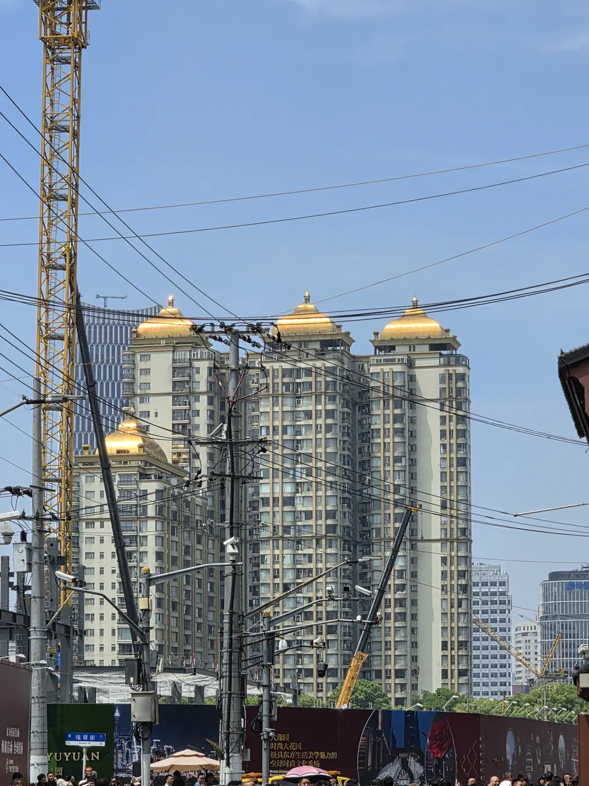
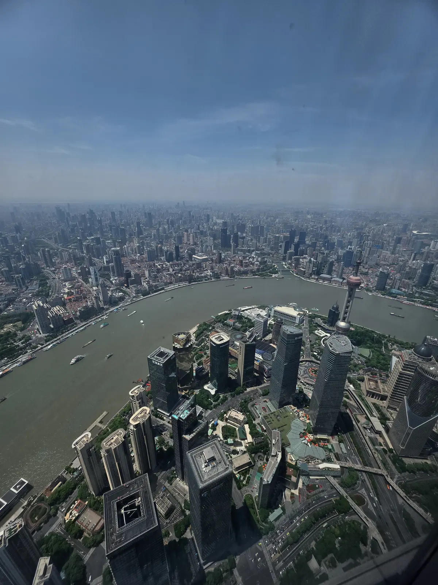
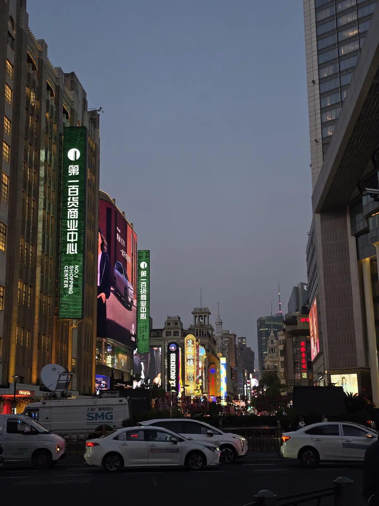

Wallpapers
Colecciones de fotografías de Japón, China y Colombia.
01

Japón
Japón en pausa.
Un lienzo minimalista donde el color es un susurro.
3 fotografías en la galería.
Qué incluye
-
Naturaleza: Verdes de musgo profundo, ocres tenues y el rosa efímero del cerezo.
-
Tradición: Piedra gris en murallas ancestrales y madera cálida en templos en silencio.
-
Modernidad: Destellos suaves de neón en la penumbra y la calma cálida de los farolillos en callejones nocturnos.


02

China
China entre contrastes.
Un viaje donde la historia milenaria se encuentra con la energía de las grandes ciudades.
12 fotografías en la galería.
Qué incluye
-
Naturaleza: Montañas envueltas en niebla, bosques de bambú y paisajes que parecen sacados de una pintura tradicional.
-
Tradición: Templos ancestrales, tejados curvados y farolillos rojos que iluminan calles llenas de historia.
-
Modernidad: Rascacielos iluminados, calles vibrantes y luces de neón que dibujan una nueva cara de China.








03

Colombia
Colombia entre dos océanos.
Un viaje donde el océano Pacífico y el mar Caribe se encuentran con montañas, selvas tropicales, selvas amazónicas y ciudades llenas de vida.
12 fotografías en la galería.
Qué incluye
-
Naturaleza: Playas de arena dorada, selvas exuberantes y montañas que esconden cascadas y paisajes llenos de biodiversidad.
-
Tradición: Ritmos de cumbia y vallenato, pueblos llenos de color y celebraciones que mantienen vivas las costumbres y la esencia de Colombia.
-
Cultura: Sabores únicos, mercados llenos de vida y ciudades donde se mezclan las raíces indígenas, africanas y españolas.